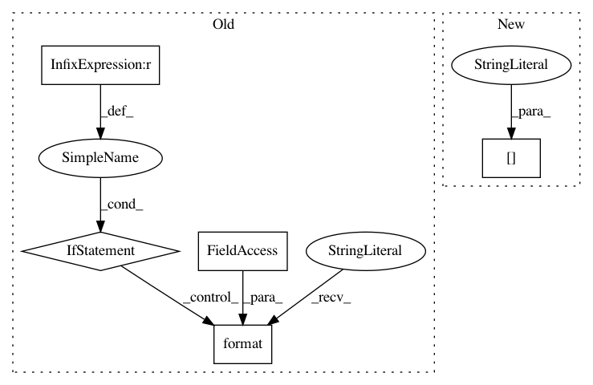

2d325991589692bb25d398209022ae03a65074d3,examples/transformer/transformer.py,,,#,27
Before Change
swords = [ " ".join([vocab._id_to_token_map_py[i] for i in sent]) for sent in source ]
dwords = [ " ".join([vocab._id_to_token_map_py[i] for i in sent]) for sent in dec_in ]
twords = [ " ".join([vocab._id_to_token_map_py[i] for i in sent]) for sent in target ]
if step < 1000:
logging.info("source:{}".format(source))
logging.info("swords:{}".format(swords))
logging.info("dec_in:{}".format(dec_in))
logging.info("dwords:{}".format(dwords))
logging.info("target:{}".format(target))
logging.info("twords:{}".format(twords))
writer.add_summary(mgd, global_step=step)
if step % 1000 == 0:
print("step:{} loss:{}".format(step, loss))
saver.save(sess, logdir+"my-model", global_step=step)
After Change
else:
learning_rate = 2 * tf.minimum(1.0, (fstep / opt_hparams["warmup_steps"])) \
* tf.rsqrt(tf.maximum(fstep, opt_hparams["warmup_steps"])) \
* encoder_hparams["embedding"]["dim"]**-0.5
optimizer = tf.train.AdamOptimizer(learning_rate=learning_rate,
beta1=0.9, beta2=0.98, epsilon=1e-6)
train_op = optimizer.minimize(mle_loss, global_step)
In pattern: SUPERPATTERN
Frequency: 3
Non-data size: 5
Instances
Project Name: asyml/texar
Commit Name: 2d325991589692bb25d398209022ae03a65074d3
Time: 2018-03-18
Author: zhiting.hu@petuum.com
File Name: examples/transformer/transformer.py
Class Name:
Method Name:
Project Name: ray-project/ray
Commit Name: c576f0b0737370507bfa1a55075977e7df6e82a1
Time: 2020-12-20
Author: me@barakmich.com
File Name: python/ray/worker.py
Class Name:
Method Name: print_logs
Project Name: deepmind/sonnet
Commit Name: 62386f9bdb92662267f18fcf766c84ef6d0e7124
Time: 2018-07-17
Author: noreply@google.com
File Name: sonnet/python/modules/conv.py
Class Name: _ConvND
Method Name: _apply_mask